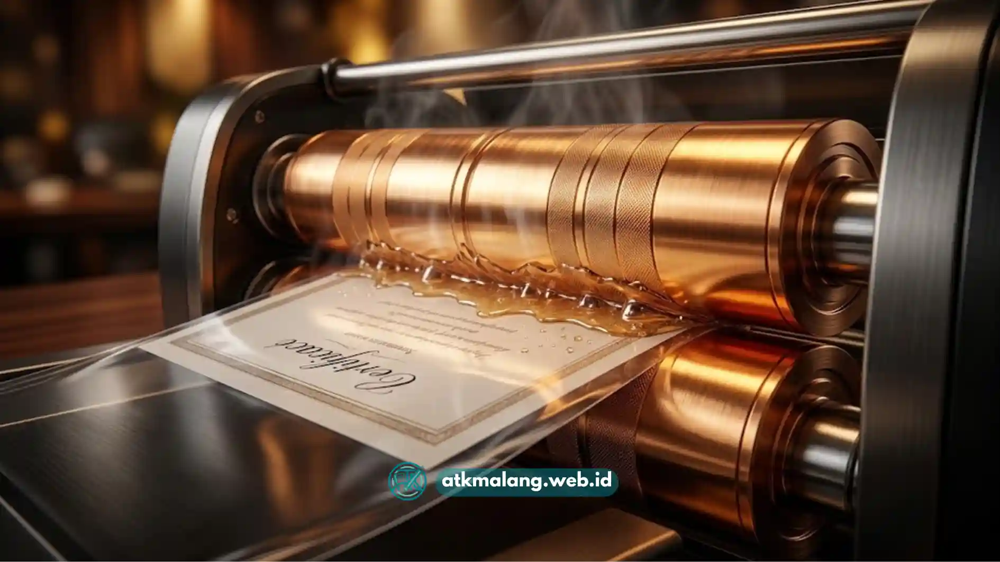

Memilih antara mesin laminating panas dan dingin sering membingungkan karena keduanya sama-sama berfungsi melindungi dokumen.
Meskipun tujuannya sama, cara kerja dan hasil akhir yang diberikan oleh kedua jenis mesin kantor ini cukup berbeda.
Artikel ini membahas secara rinci perbedaan keduanya agar Anda dapat menentukan pilihan yang paling sesuai dengan jenis dokumen berharga yang ingin dilindungi.
Daftar Isi
Cara Kerja Mesin Laminating Panas
Mesin laminating panas menggunakan elemen pemanas di dalam rolnya untuk melelehkan lapisan lem yang terdapat pada plastik pouch.
Saat dokumen beserta pouch ditarik melalui rol yang panas, lem tersebut meleleh dan merekat kuat ke permukaan kertas.
Proses ini akan menghasilkan ikatan yang rapat dan tahan lama untuk melindungi setiap dokumen.
Jenis mesin ini umumnya membutuhkan waktu pemanasan awal sekitar beberapa menit sebelum siap digunakan.
Waktu pemanasan tersebut tergantung pada kapasitas dan merek mesin Alat Tulis Kantor yang Anda pilih.
Hasil laminating panas cenderung lebih rapi, mengilap, dan kokoh karena plastik menempel secara merata tanpa celah udara.
Cara Kerja Mesin Laminating Dingin
Berbeda dengan sistem panas, mesin laminating dingin tidak menggunakan elemen pemanas sama sekali.
Mesin ini mengandalkan tekanan mekanis dari rol untuk menekan plastik film yang sudah memiliki lapisan perekat sendiri (self-adhesive).
Proses penekanan ini memastikan lapisan tersebut menempel erat pada dokumen dan terjadi pada suhu ruangan.
Karena tidak melibatkan panas, mesin laminating dingin lebih cocok digunakan untuk dokumen yang sensitif terhadap suhu tinggi.
Dokumen sensitif seperti foto tertentu, stiker dengan tinta mudah luntur, atau bahan khusus sangat direkomendasikan.
Ini meminimalkan risiko bahan berubah warna maupun bentuk apabila terkena panas berlebih dari rol mesin.

Mesin laminating panas menggunakan elemen pemanas di dalam rol untuk melelehkan lem plastik secara merata.Perbandingan Karakteristik Kedua Jenis Mesin
Dari sisi kecepatan persiapan, mesin dingin lebih unggul karena tidak memerlukan waktu pemanasan sama sekali.
Anda bisa langsung menggunakan mesin dingin begitu dinyalakan, berbeda dengan mesin panas yang butuh waktu tunggu.
Mesin panas harus mencapai suhu kerja optimal sebelum digunakan untuk mencegah hasil yang keriput.
Dari sisi kekuatan rekat, laminating panas umumnya menghasilkan ikatan yang lebih kuat dan tahan lama.
Proses pelelehan lem terjadi secara menyeluruh, berbeda dengan laminating dingin yang bergantung pada kualitas lapisan perekat plastik.
Daya rekat perekat self-adhesive pada laminating dingin bisa bervariasi tergantung merek yang digunakan.
Dari sisi keamanan, laminating dingin direkomendasikan untuk bahan yang berisiko rusak akibat paparan suhu panas.
Sebaliknya, laminating panas sangat cocok untuk kertas standar administrasi, seperti ijazah dan sertifikat.
Dari sisi biaya operasional, mesin laminating dingin hemat listrik karena tidak menggunakan daya tambahan untuk elemen pemanas.
Jenis Dokumen yang Cocok untuk Laminating Panas
Dokumen dengan bahan kertas standar seperti ijazah, sertifikat pelatihan, dan dokumen penting lainnya sangat cocok dilaminating panas.
Selain itu, KTP, kartu pelajar, menu restoran, dan poster informasi juga mendapatkan manfaat maksimal dari metode ini.
Hasil akhir menggunakan laminating panas lebih tahan gesekan dan memberikan perlindungan kedap air yang optimal.
Dokumen juga akan memiliki tampilan yang lebih profesional karena permukaannya menjadi lebih rata.
Efek mengilap yang dihasilkan oleh kertas bahan cetak saat dilaminating panas memberikan kesan premium.
Jenis Dokumen yang Cocok untuk Laminating Dingin
Dokumen atau bahan yang mengandung tinta thermal sangat disarankan menggunakan metode laminating dingin.
Foto dengan lapisan tinta tertentu, stiker vinyl, atau bahan yang berpotensi meleleh sangat aman dengan metode ini.
Mesin ini mencegah bahan berubah warna atau rusak akibat elemen panas dari mesin laminating biasa.
Metode ini juga sering digunakan secara luas untuk melapisi bahan promosi luar ruangan ukuran besar.
Bahan promosi tersebut membutuhkan lapisan pelindung tambahan agar tahan cuaca tanpa risiko kerusakan pemanasan.
Faktor yang Perlu Dipertimbangkan Sebelum Memilih
Pertimbangkan jenis dan volume dokumen yang akan Anda laminating secara rutin untuk bisnis atau kantor.
Untuk kebutuhan dokumen kertas standar dalam jumlah banyak, mesin laminating panas lebih efisien secara hasil dan waktu.
Namun jika jenis dokumen lebih bervariasi termasuk bahan sensitif panas, pertimbangkan mesin dengan dua mode sekaligus.
Pertimbangkan pula frekuensi penggunaan Anda di pengadaan kantor atau percetakan.
Mesin dengan mode ganda (panas dan dingin) memiliki harga lebih tinggi, tetapi menawarkan fleksibilitas yang sangat besar.
Pilihan ini ideal bagi pengguna yang menangani berbagai jenis media cetak dalam satu unit usaha operasional.
Mesin laminating panas unggul dalam kekuatan rekat dan sangat cocok untuk dokumen kertas standar. Sementara itu, mesin laminating dingin lebih aman untuk bahan sensitif terhadap panas dan sangat praktis tanpa waktu pemanasan. Memilih jenis mesin yang tepat akan menjaga berkas berharga Anda lebih awet dalam jangka panjang.